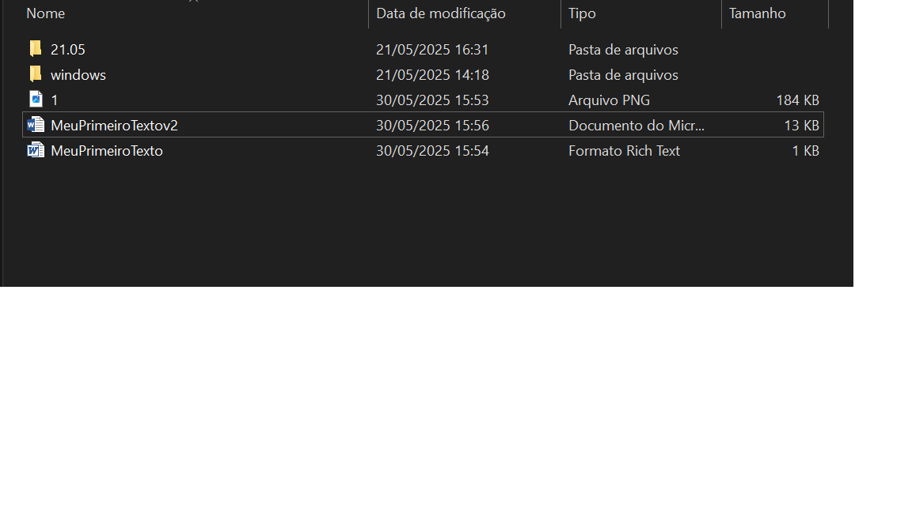

Atividades Práticas - Windows
Tarefa 2: Trabalhando com WordPad
Criação e formatação de texto no WordPad com salvamento em diferentes formatos.

Tarefa 3: Utilizando a Calculadora
Operações matemáticas básicas e científicas com cópia de resultados.
Tarefa 4: Gerenciamento de Arquivos
Criação de pastas, movimentação e cópia de arquivos.
Tarefa 5: Personalização da Área de Trabalho
Alteração do papel de parede e organização de janelas.
Tarefa 6: Ajuda e Informações do Sistema
Exploração do menu Ajuda e coleta de informações do sistema.
Tarefa 7: Gerenciamento de Janelas
Organização de janelas e monitoramento no Gerenciador de Tarefas.
Tarefa 8: Trabalhando com Paint
Criação de desenho e inserção no WordPad.
Tarefa 9: Configurações do Firewall
Verificação das configurações do Firewall do Windows.
Tarefa 10: Bloco de Notas e Impressão
Criação de lista de tarefas e configuração de Impressão
Tarefa 11: Atalhos de Teclado
Prática de atalhos básicos no WordPad e execução de programas através do menu Executar.